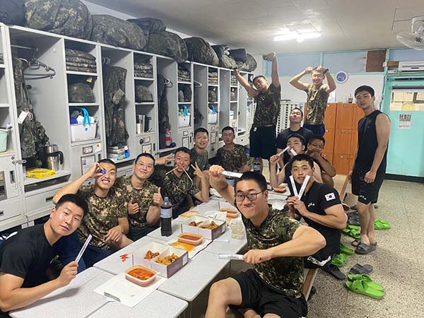

Click the button to go back to previous chapter
My Journey As Soldier
11th Company 1st Platoon 3rd Squad
Beginning / Trainee

In South Korea, military service is mandatory, and every man (starting at age 18 or above) must be enlisted. I enlisted in the army in June 2021 and completed my service in December 2022. The picture was taken on the morning of the day of joining the army. Notice how my hair is short due to requirements that trainees should have before being enlisted. After I enlisted, I went through a trainee session, and it was fast; there were numerous exercises and simulations that I could not remember all. The session was tough, but it was an important step to becoming a soldier who can protect my country.
Private: Welcome Party
After I finished my training session, I got promoted to private rank and was assigned to my unit (11th Company, 1st Platoon, 3rd Squad). When I entered the dormitory, the members welcomed me with surprise firecrackers. It was surprising because I expected the unit to have a strict, rigid environment. However, it was the opposite, as the picture shows. The picture was taken during my welcome party, where Lieutenant Lim delivered fried chicken to the platoon. In addition, it was Friday night during the Olympic (Tokyo 2021) season, so it was the perfect time for chicken.
*Try to find me, if you can.
*You can zoom in the photos by moving the curours on the photos!

Having a barbeque time during the winter season membership training with platoon members.
Private 1st Class
During my service as a private 1st class rank (promoted from private rank), there were numerous drills and teamwork training. During that time, the platoon members were regularly switched as Sergeant members were discharged and private members were assigned to the platoon. This change allowed me to have deep conversations with comrades and build private relationships with them.
Although I was not able to take photos during drills (confidential information), I collected the photos taken during the teamwork training, like barbeque time, sports day, and late-night activities (i.e. mafia game).
*To enjoy the collection, use 'Next' and 'Previous' button to navigate the photos!
Corporal: Trip w/ Members of June
The military experience during corporal rank was peaceful: no drills, training, or any external work. Hence, I was able to reflect on myself and enjoy being a part of a community with strong teamwork. During this time, I went to the trip with the comrades who joined the army in the same month, known as the "Members of June." We went on the trip to celebrate our first year of military service, and the whole experience was wild and young: no planning, no thinking, just drinking and being young. It was truly remarkable and I would never forget such experience.
*If you want to see the secret archive of photos taken during the trip, move the cursor around the blank space!
Sergeant
After I got promoted to Sergeant rank, I led the third squad until I was discharged from the service. The background is the picture of the 1st platoon taken during the last night of my service.
*Hover around the background and click the highlighted area to learn more about my comrades!
Kyungmin Kim
←KyungMin
Kyungmin is the signalman of the platoon. When he joined the platoon, I looked after him a lot as he struggled to settle into the military lifestyle. Since then, he and I have been so close that people called our relationship "father-and-son" (myself as the father and KyungMin as the son). In addition, he and I shared the same hobby, which hardened our relationship even more.
Third Squad

↓ByungChan
↓HanKyu
The third squad consisted of three members including myself: ByungChan (middle) and HanKyu (right). ByungChan was the rifleman, and HanKyu was the machine gunner of the squad. The third squad was unique compared to the other squads because all members were certified medics. In addition, we shared similar hobbies, so the squad was packed with teamwork. They have been great members and leading the squad was an honor.
Members of June

↓GunWuk
↑JunSang
←JinWoo
↓HaeMin
The members in the picture joined the army and the company in the same month. Therefore, the relationship between us is very tight as we went through the service together since private rank. Despite not all members being in the same platoon, we stayed close enough to have our trip for the 1st-year celebration. I relied on them a lot when I was emotionally tired, and without them, I would not be able to complete the service.
First Platoon

KyungMin↑
MinSeo→
↑HanKyu
↓IkJun
↑ByungChan
↓MinHyuk
↑EunHyung
↑GunWuk
NamEun↑
The first platoon, my second home. Since private rank, the first platoon has been the greatest and the best in the company because we won many awards (11 in total, two from myself) and we held numerous teamwork training, resulting in flawless tactical performance. In addition, my experience has been so comfortable that I overcame my mental problems by consulting with my members. Overall, a great team that I will not forget.
Thank You For Your Service!
Officially Discharged!

Click the button to go to the
next chapter